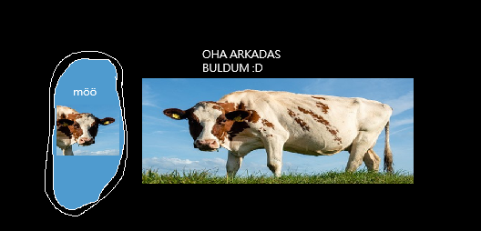
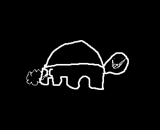
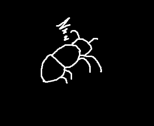

Hayvanlar hakkında komik bilgiler!
İneklerin En İyi Arkadaşları Vardır: İneklerin kendilerine yakın hissettikleri, “kankaları” olur. Ayrıldıklarında ise stres yaşarlar!

Kaplumbağalar Popolarından Nefes Alabilir: Kaplumbağaların bazı türleri özellikle kışın su altında kaldıklarında solungaç gibi kullanabilecekleri kloaklarını kullanarak nefes alabilirler. İlginç ama işe yarıyor!

Karıncalar Uyumaz: Karıncalar hiç uyumaz ve sürekli çalışırlar. Ama bazen kısa kısa duraksayıp dinlenirler. Uykusuz ama enerjik bu minik işçiler gerçekten şaşırtıcı.
